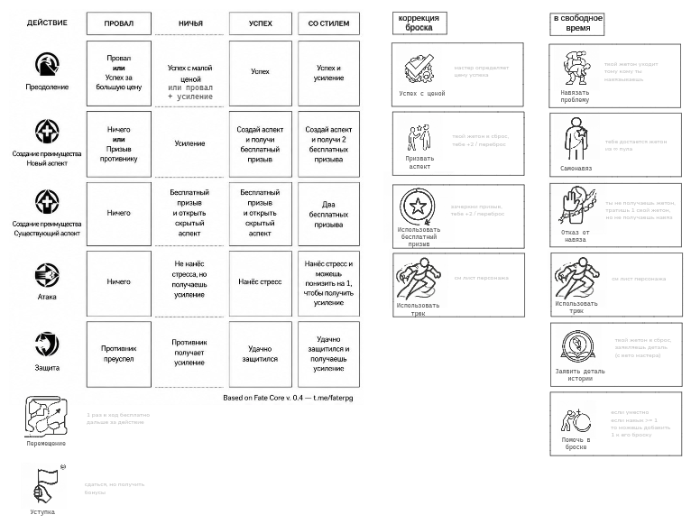

Шпаргалка
Это позвоночник руководства. Сюда возвращаются во время игры: выбрать действие, посмотреть исход, добавить коррекцию и понять, что можно сделать в свободное время. Не учи наизусть — просто знай, где смотреть.
Как ею пользоваться
четыре шага1 · Действие
Что персонаж делает: преодоление, преимущество, атака или защита. В свободной сцене — чаще первые два.
2 · Исход
Сравни результат с сопротивлением: провал, ничья, успех, успех со стилем.
3 · Коррекция
Аспект, бесплатный призыв, трюк. Добавляй только то, что действительно подходит.
4 · Свободное время
Заявить деталь, помочь, отказаться от навязя. Это не конфликтный ход.
Шпаргалка с подсветкой
Наведи на зону: она подсветится, подпишется и покажет, куда перейти за подробностями. Четыре зоны — действия, исходы, коррекция броска и свободное время.

Шпаргалка — не экзамен. На неё смотрят, а не запоминают. Чистая справочная матрица ниже — та же логика, но без рисунка.